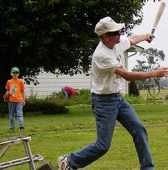
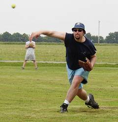
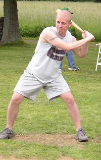
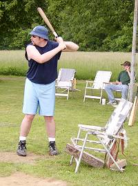
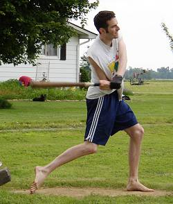
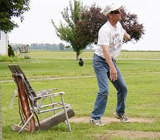
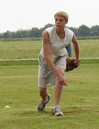
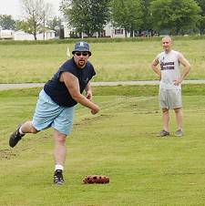
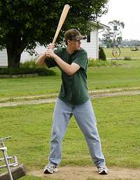

Tony Cork connects on a single to right in game two of the Opening Day doubleheader
as Chair Baseball's official ball boy, Colton Williamson, looks on in the
background. Cork was 10-for-29 on the day and was brilliant on the mound
allowing just one run and 5 hits in the win. |

2nd year player Dave Rueth fires a pitch in game two of the Opening Day
doubleheader. Rueth allowed just one run on 5 hits in 3 innings of
work. |

Josh Williamson takes a pitch in his return to Corklestick. Williamson
had played in just 8 games over the past 3 years. He finished Opening
Day 4-for-15 with a triple and reached a personal milestone when he connected
on his 200th career hit in the first game of the day. |

Dave Rueth readies himself for a Tony Cork pitch in the opener. Rueth,
last year's rookie of the year, struggled at the plate on Opening
Day going just 2-for-20. |

Patrick Cork connects for the first homerun of the 2003 season. Cork
finished the day 10-for-27 with 5 triples, 3 homeruns and 8 RBI. |

Tony Cork watches as he fouls a ball down the right field line. Cork
picked up the 37th win in his career by firing a 5-hit shutout to open the
season. He needs just 9 more strikeouts on the mound for 300 in his
career. |

Robert Trimble was brilliant on the mound in Game 2 of the doubleheader
allowing just 4 hits over 6 shutout innings. Trimble also connected for
a homerun and drove in 6 in the doubleheader. |

Dave Rueth attempts to throw out a potential single in the second game of
the doubleheader as Josh Williamson shows off his muscles in the background. |

Cory Williamson prepares for
a pitch in the first Chair Baseball game of his career. Williamson
had 2 hits in his debut and also threw 5 innings on the mound in relief. |